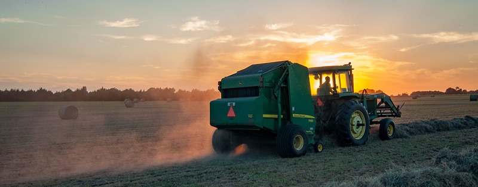

Innovation is more important in modern agriculture than ever before. The industry as a whole is facing huge challenges, from rising costs of supplies, a shortage of labor, and changes in consumer preferences for transparency and sustainability. There is increasing recognition from agriculture corporations that solutions are needed for these challenges. In the last 10 years, agriculture technology has seen a huge growth in investment, with $6.7 billion invested in the last 5 years and $1.9 billion in the last year alone. Major technology innovations in the space have focused around areas such as indoor vertical farming, automation and robotics, livestock technology, modern greenhouse practices, precision agriculture and artificial intelligence, and blockchain.
Indoor Vertical Farming

Indoor vertical farming can increase crop yields, overcome limited land area, and even reduce farming’s impact on the environment by cutting down distance traveled in the supply chain. Indoor vertical farming can be defined as the practice of growing produce stacked one above another in a closed and controlled environment. By using growing shelves mounted vertically, it significantly reduces the amount of land space needed to grow plants compared to traditional farming methods. This type of growing is often associated with city and urban farming because of its ability to thrive in limited space. Vertical farms are unique in that some setups don’t require soil for plants to grow. Most are either hydroponic, where vegetables is grown in a nutrient-dense bowl of water, or aeroponic, where the plant roots are systematically sprayed with water and nutrients. In lieu of natural sunlight, artificial grow lights are used.
Vertical farms use up to 70% less water than traditional farms.
From sustainable urban growth to maximizing crop yield with reduced labor costs, the advantages of indoor vertical farming are apparent. Vertical farming can control variables such as light, humidity, and water to precisely measure year round, increasing food production with reliable harvests. The reduced water and energy usage optimizes energy conservation -- vertical farms use up to 70% less water than traditional farms. Labor is also greatly reduced by using robots to handle harvesting, planting, and logistics, solving the challenge farms face from the current labor shortage in the agriculture industry.
Farm Automation
Farm automation, often associated with “smart farming”, is technology that makes farms more efficient and automates the crop or livestock production cycle. An increasing number of companies are working on robotics innovation to develop drones, autonomous tractors, robotic harvesters, automatic watering, and seeding robots. Although these technologies are fairly new, the industry has seen an increasing number of traditional agriculture companies adopt farm automation into their processes.
New advancements in technologies ranging from robotics and drones to computer vision software have completely transformed modern agriculture. The primary goal of farm automation technology is to cover easier, mundane tasks. Some major technologies that are most commonly being utilized by farms include: harvest automation, autonomous tractors, seeding and weeding, and drones. Farm automation technology addresses major issues like a rising global population, farm labor shortages, and changing consumer preferences. The benefits of automating traditional farming processes are monumental by tackling issues from consumer preferences, labor shortages, and the environmental footprint of farming.
Blockchain

Blockchain's capability of tracking ownership records and tamper-resistance can be used to solve urgent issues such as food fraud, safety recalls, supply chain inefficiency and food traceability in the current food system. Blockchain’s unique decentralized structure ensures verified products and practices to create a market for premium products with transparency.
Food traceability has been at the center of recent food safety discussions, particularly with new advancements in blockchain applications. Due to the nature of perishable food, the food industry at whole is extremely vulnerable to making mistakes that would ultimately affect human lives. When foodborne diseases threaten public health, the first step to root-cause analysis is to track down the source of contamination and there is no tolerance for uncertainty.
Consequently, traceability is critical for the food supply chain. The current communication framework within the food ecosystem makes traceability a time-consuming task since some involved parties are still tracking information on paper. The structure of blockchain ensures that each player along the food value chain would generate and securely share data points to create an accountable and traceable system. Vast data points with labels that clarify ownership can be recorded promptly without any alteration. As a result, the record of a food item’s journey, from farm to table, is available to monitor in real-time.
The use cases of blockchain in food go beyond ensuring food safety. It also adds value to the current market by establishing a ledger in the network and balancing market pricing. The traditional price mechanism for buying and selling relies on judgments of the involved players, rather than the information provided by the entire value chain. Giving access to data would create a holistic picture of the supply and demand. The blockchain application for trades might revolutionize traditional commodity trading and hedging as well. Blockchain enables verified transactions to be securely shared with every player in the food supply chain, creating a marketplace with immense transparency.
Artificial Intelligence

The rise of digital agriculture and its related technologies has opened a wealth of new data opportunities. Remote sensors, satellites, and UAVs can gather information 24 hours per day over an entire field. These can monitor plant health, soil condition, temperature, humidity, etc. The amount of data these sensors can generate is overwhelming, and the significance of the numbers is hidden in the avalanche of that data.
The idea is to allow farmers to gain a better understanding of the situation on the ground through advanced technology (such as remote sensing) that can tell them more about their situation than they can see with the naked eye. And not just more accurately but also more quickly than seeing it walking or driving through the fields.
Remote sensors enable algorithms to interpret a field's environment as statistical data that can be understood and useful to farmers for decision-making. Algorithms process the data, adapting and learning based on the data received. The more inputs and statistical information collected, the better the algorithm will be at predicting a range of outcomes. And the aim is that farmers can use this artificial intelligence to achieve their goal of a better harvest through making better decisions in the field.
"Our" Food accelerator Program "runs twice a year boosting our startups through corporate business development, networking and pitch events, world-class mentorship, and the potential for investment."